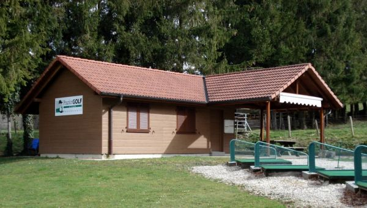

Practice Golf Club Bassecourt
Présentation du club
Situé au beau milieu des pâturages Essert Jacques surplombant le village de Bassecourt, le Practice Golf Club
de Bassecourt offre la possibilité depuis 20 ans à tout golfeur, débutant ou chevronné,
d’entraîner son swing
dans le but de jouer sur les fairways et greens de ses parcours favoris.
Lire l'article « PGCB
déjà 20 ans de plaisir »,
paru dans le magazine Open Golf au printemps 2008.
Ouvert à qui et quand ?
Réservé aux membres exclusivement, le PGCB est ouvert chaque excepté le mardi et le vendredi matin pour le rammassage des balles et la tonte du terrain.
Infrastructure
- 14 tapis de practice
dont 4 couverts - 1 putting-green
- 1 bunker
- Cabane avec terrasse et WC
Formation
La formation est assurée par notre pro Olivier Brun qui dispense des cours individuels de même que des stages pour l'obtention de la carte verte. Informations et inscriptions à la cabane du practice.
Tarifs
| Catégorie | Entrée | Cotisation |
|---|---|---|
| Adulte | 150.- | 250.- |
| Couple | 225.- | 350.- |
| Etudiant < 25 ans Junior < 20 ans |
0.- | 75.- |
| Cadet < 16 ans | 0.- | 25.- |
Meilleurs membres
- Pierre Kiroule
- Sylvain Aybon-Folboir
- Marc Assin
- Sandra Samegratte
- Otto Bus